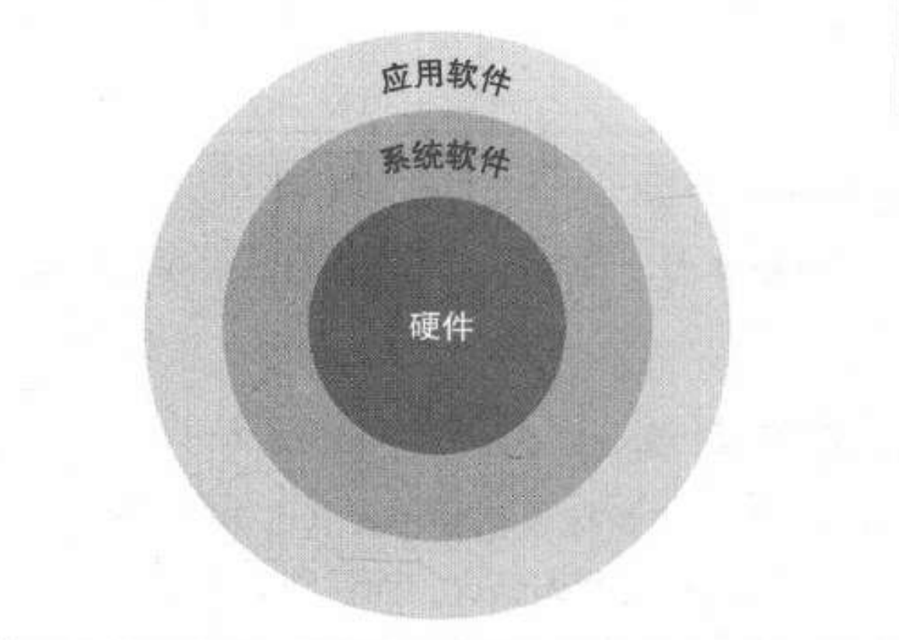

计算机组成知识点整理(1)：概述
Last updated on June 6, 2025 pm
这是SJTU-ICE2603《计算机组成》课程的知识点整理系列。本文整理部分为“第1章：概述”。
1.1 引言
1.1.1 传统计算应用分类
| 类型 | 特点 |
|---|---|
| 个人计算机(PC) | 低成本、单用户、第三方软件 |
| 服务器 | 网络访问，大容量、高性能、高可靠性 |
| 超级计算机 | 用于高端科学和工程计算，最高计算能力 |
| 嵌入式计算机 | 专用功能，有严格的功耗、性能、成本限制 |
1.1.2 后 PC 时代的特征
- 个人移动设备替代个人电脑
- 电池供电
- 无线连接互联网
- 价格低
- 云计算接替传统服务器
- 仓储级计算机
- 软件即服务（在本地和云上各运行一部分软件）
1.2 7个伟大思想
- 使用抽象简化设计
- 加速经常性事件
- 通过并行提高性能
- 通过流水线提高性能
- 通过预测提高性能
- 存储层次
- 通过冗余提高可靠性
1.3 计算机软件
1.3.1 软件的层次结构

- 系统软件包括操作系统、编译器、加载程序、汇编器等
- 应用软件包括数据库系统等
1.3.2 三个级别的语言
- 高级编程语言 汇编语言 机器语言
- 汇编语言是以助记符形式表示的机器指令
1.4 计算机硬件
1.4.1 计算机的硬件组成
- 输入部件
- 输出部件
- 存储器
- 运算器（数据通路）
- 控制器
- 运算器和控制器合称为处理器，即中央处理单元（CPU）
- 无线网络既是输入设备又是输出设备
- 内存使用 DRAM，高速缓存使用 SRAM
- 硬件和软件之间的接口，称为指令集体系结构（ISA）
1.4.2 普林斯顿架构 与 哈佛架构
普林斯顿架构（冯·诺伊曼架构）
- 特点
- 统一存储体：指令和数据存放在同一存储器中，均以二进制形式存储
- 统一编址：内存和 I/O 端口共享唯一的地址空间（一个地址对应8bit）
- 共享总线：指令和数据通过同一总线传输，按地址逐行存取
- 优点
- 设计简单：硬件结构单一，开发成本低
- 灵活性强：存储器空间动态分配，适用于通用计算场景
- 编程友好：指令与数据地址无区分，简化编译器设计
- 缺点
- 性能瓶颈：总线分时复用导致指令取指与数据存取无法并行，效率受限
- 安全性风险：指令与数据混存可能导致程序被意外修改
哈佛架构
- 特点
- 分离存储体：指令存储器和数据存储器物理隔离，独立编址
- 独立总线：指令和数据通过不同总线传输，支持并行访问
- 优点
- 高性能：指令与数据并行存取，消除总线竞争，提升执行速度
- 安全性高：指令存储器只读设计（ROM），防止程序被篡改
- 实时性强：适用于嵌入式系统和高吞吐量场景
- 缺点
- 复杂度高：需独立的总线和存储控制器，硬件成本增加
- 资源冗余：指令与数据存储器容量固定，灵活性较差
- 编程复杂：需显式区分指令与数据地址，增加编译器负担
小结
| 对比维度 | 普林斯顿架构 | 哈佛架构 |
|---|---|---|
| 存储体设计 | 指令与数据共享存储体 | 指令与数据分离存储体 |
| 总线类型 | 单一总线，分时复用 | 独立指令总线和数据总线 |
| 性能瓶颈 | 存在冯·诺依曼瓶颈 | 并行访问，无总线竞争 |
| 典型应用 | 通用计算机（如PC、服务器） | 嵌入式系统、DSP、物联网设备 |
| 成本与复杂度 | 低 | 高 |
1.5 半导体制造技术
- 硅锭被切成晶圆，晶圆被切成晶片（芯片）
1.6 性能计算
1.7 功耗计算
1.8 多核处理器
- 多核微处理器：一个芯片上有多个处理器
- 并行程序的挑战：调度、负载平衡、同步时间、通信负载
1.9 基准测评程序（benchmark）
- 不同指令架构需使用对应编译的测试集
- 通常用高级语言编写，依赖编译器优化生成高效代码
- 广泛应用于计算机性能评估
历年真题
- 下列不属于系统程序的是
- A：数据库系统
- B：操作系统
- C：汇编程序
- D：编译程序
- 计算机系统结构中软件层和硬件层之间的接口抽象是
- A：输入输出接口（I/O Interface）
- B：汇编语言（Assemble Language）
- C：操作系统（Operation System）
- D：指令集系统结构（Instruction Set Architecture）
- 关于 Benchmarks 的描述不正确的是
- A：为获得总体性能指标，可通过对系统在计算、I/O等各方面性能的加权累加的方式获得
- B：针对每一类计算机系列而设计，不同指令架构的计算机要采用相对应的测试集
- C：一般都采用汇编语言编写，以获取最好的CPU利用率
- D：因其使用简便，已经被广泛应用于计算机性能评估
- 比较哈佛结构和普林斯顿结构，说明各自的优缺点
Reference
https://gist.github.com/smallaccount101/6324d7c82d103783f21b7cc6da7d0f7c
注：本文中部分图片来自《计算机组成与设计·硬件/软件接口》。
计算机组成知识点整理(1)：概述
https://cny123222.github.io/2025/03/31/计算机组成知识点整理-1-：概述/